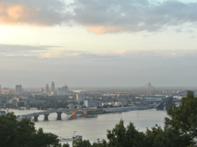
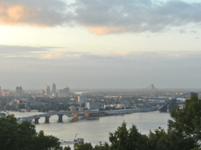

Get to know more about your friends' locations
Each person is a free artist, called to transform the conditions, thoughts, and structures that shape our lives.
The city of TripleTen has brought together professionals from all corners of the world. Today, the TripleTen Art Gallery is proud to present stories and photos of some of the people who dedicate their time and effort to making the future tech professionals of this city feel at home. Each of us has a unique story about the place we come from. Feel free to add your own story and a visual artwork dedicated to your hometown to our collection. No matter where you're from, we're happy to have you as our neighbor.


 



Criccieth, Wales
ARTISTS
Steffan Warren, Chief Editor
Kseniya Glagoleva, Project Manager

The medieval ruins of Criccieth Castle overlook the town from a rock that juts out into the sea. It is believed to have been built by Llywelyn the Great in the 13th century. Around 900 years later, the self-proclaimed Pearl of Wales on the Shores of Snowdonia has become a popular tourist destination during the summer months.
A short walk from Castle Street, you can enjoy the world's best ice cream at Cadwalader's, rumored to contain locally sourced seaweed as its secret ingredient. Another claim to fame is that Criccieth has won the Wales in Bloom award for five consecutive years, thanks to its spectacular floral displays throughout the town. It was also home to David Lloyd George, the only Welshman to have served as Prime Minister of the United Kingdom.
Berea, USA
ARTISTS
Travis Turner , Chief Editor
Berea is a small town located in central Kentucky, USA. Surrounded by beautiful forests and fields, it is known as the state's capital of crafts. Visitors will find numerous shopping opportunities, including stores offering handmade jewelry, candles, wooden items, galleries, glass workshops, and much more. The town hosts an annual festival celebrating "spoonbread," a local dish made with cornmeal bread and traditionally served with a wooden spoon. This festival features a variety of vendors, free entertainment, and activities suitable for all ages.
However, it is probably best known for the local college. Berea College was founded in 1855 and was the first college in the South to be racially integrated, as well as the first to be coeducational. In a rather unique way, it does not charge tuition - every student receives a full scholarship.
Muramvya, Burundi
ARTISTS
Grevisse Kenguruka, technical editor
Muramvya is one of the 18 provinces of Burundi. In the era of the kingdom, Muramvya was the royal capital, and in 2007, due to its cultural and natural landscape, it was added to the UNESCO World Heritage Tentative List. It is located in the center of Burundi, between the country's political and economic capitals.
The climate is quite cold at night, but during the day, you would think you're in heaven. At 2,665 meters (8,743 feet) above sea level, Mount Teza is one of the coldest places in the province. But this cool breeze allows for one of the largest tea and coffee plantations in the country, which represent the majority of Burundi's exports.
The Kibira National Park, one of the largest wildlife reserves for monkeys, overlaps four provinces, including Muramvya. This national park is located at the peak of the beautiful Congo-Nile Divide mountains, ranging from 1,550 to 2,660 meters in altitude. It is filled with beautiful vegetation and serves as a source for the various rivers and streams that supply water throughout the country.
São José do Rio Preto, Brazil
ARTISTS
Grevisse Kenguruka, technical editor

The vibrant city of São José do Rio Preto, located in the interior of São Paulo, offers a perfect blend of rich culture and modern living. Established in the late 19th century, it has since grown into one of the most important urban centers in the region, with a thriving economy and a dynamic cultural scene.
A stroll through the city center offers a blend of modern and historical architecture, diverse local and international cuisine, and beautiful parks like Parque da Represa for outdoor activities. The city hosts cultural events, such as the International Festival of Performing Arts, attracting artists from across Brazil. With its vibrant urban energy and peaceful atmosphere, it is a great destination for culture, leisure, and quality of life.